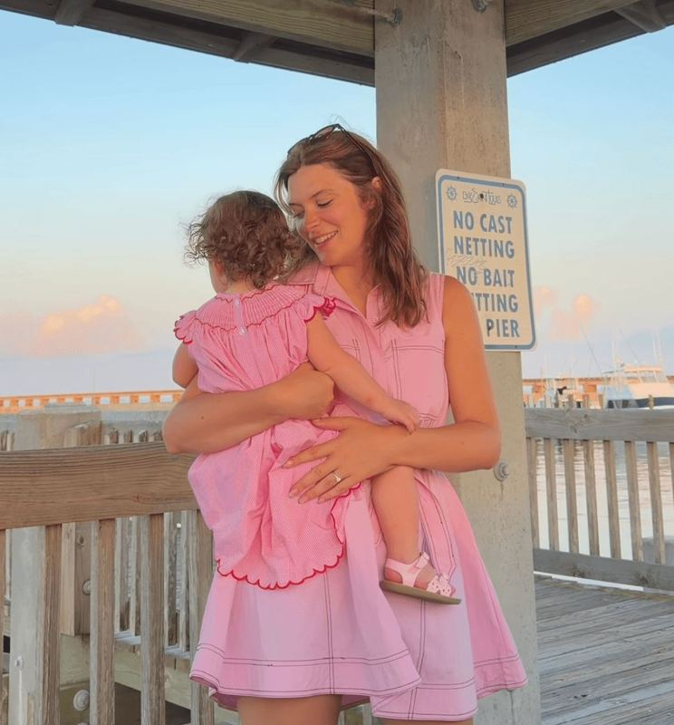

✦
✿
🌷 MOM CREATOR SPOTLIGHT
Meet Justine.
@justineandlainey
Soft motherhood, toddler life and the little everyday moments that somehow make you feel both seen and understood.
🤍 Soft Motherhood
🧸 Toddler Mom Life
🫶 Mom Community

WE THINK
YOU'LL
LOVE HER
YOU'LL
LOVE HER
MomYouNeedThis says:
This is one worth knowing about. 🌷